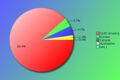

YAPC::NA 2011 - Survey Results
The following survey results are a simple presentation of the raw data.
No attempt has been made to analyse the data and compare with previous
years. See forthcoming PDFs for more in depth analysis.
Click on pie charts to view larger image version.
Demographics (required)
These questions will help us understand who our attendees are.
Attendees:
| Count | Description |
|---|
| 86 | Responded |
| 165 | No Response |
| 251 | Total |
| 34 | Response Percentage |
Age Band:
| Count | Description |
|---|
| 0 | under 20 |
| 18 | 20 - 29 |
| 35 | 30 - 39 |
| 27 | 40 - 49 |
| 4 | 50 - 59 |
| 2 | 60 and over |
Job Type:
| Count | Description |
|---|
| 3 | CEO/Company Director/Senior Manager |
| 1 | Non-Technical Manager |
| 7 | Technical Manager |
| 11 | Technical Architect/Analyst |
| 45 | Developer |
| 4 | Engineer |
| 3 | SysAdmin |
| 4 | Student |
| 1 | Lecturer/Teacher/Trainer |
| 0 | Human Resources |
| 0 | Researcher |
| 0 | Unemployed |
| 7 | Other |
If your position covers many roles, please base this on your most senior responsibility. Also base this on the role you perform, rather than your job title. For example, a 'QA Developer' would be a 'Developer' role, and 'Information Manager' would a Manager role (Technical or Non-Technical depending upon your responsibilites)
If 'Other' please enter your professional job role or title:
- Filmmaker
- helper/wife of programmer
- Homemaker
- information analyst
- Research Developer
- Senior Developer
- startup
- startup cofounder. I architect, develop, and sysadmin our codebase.
- Student
Industry:

| Count | Description |
|---|
| 0 | Automotive |
| 4 | Education |
| 2 | Engineering |
| 4 | Finance |
| 8 | Government |
| 14 | IT Services |
| 29 | Internet/Web |
| 0 | Legal |
| 0 | Logistics |
| 4 | Media/Entertainment |
| 3 | Medical/Healthcare |
| 0 | Property |
| 2 | Research |
| 0 | Retail |
| 2 | Telecommunications |
| 3 | Travel |
| 1 | Unemployed |
| 10 | Other |
If you or your company undertake work within mulitple industry sectors, please select the primary one you are currently working within.
If 'Other' please enter your industry sector:
- Biotech
- Consultant
- HW/SW Consultant
- legal
- manufacturing
- Non-Profit
- RT
- Semiconductor
- VOIP Provider
Region:

| Count | Description |
|---|
| 76 | North America |
| 4 | Canada |
| 0 | South America |
| 4 | Europe |
| 0 | Asia |
| 2 | Australaisa |
| 0 | Africa |
Please note this is the region you were a resident in, prior to attending the conference.
The Perl Community, YAPCs & Workshops
These questions are designed to help us understand our attendees level of involvement in the Perl community.
How do you rate your Perl knowledge?
| Count | Description |
|---|
| 5 | Beginner |
| 35 | Intermediate |
| 46 | Advanced |
How many previous YAPCs have you attended?
| Count | Description |
|---|
| 24 | This was my first YAPC |
| Attended YAPCs | 1 | 2 | 3 | 4 | 5 | 6 | 7 | 8 | 9 | 10 | 11 | 12 | total |
|---|
| YAPC::NA | 15 | 15 | 10 | 3 | 4 | 3 | 3 | 2 | - | 2 | - | 2 | 206 |
| YAPC::Europe | 6 | - | - | 1 | 1 | - | 1 | - | 2 | - | - | - | 44 |
| YAPC::Asia | 3 | 1 | - | - | - | - | - | - | - | - | - | - | 5 |
| YAPC::Australia / OSDC::Australia | 2 | - | - | - | - | - | 1 | - | - | - | - | - | 9 |
How many Perl Workshops have you attended?
| Count | Description |
|---|
| 43 | Never attended one |
| Attended Workshops | 1 | 2 | 3 | 4 | 5 | 6 | 7 | 8 | 9 | 10 | 11 | 12 | 13 | 14 | 15 | total |
|---|
| Pittsburgh Perl Workshop | 9 | 4 | 4 | 4 | - | - | - | - | - | - | - | - | - | - | - | 45 |
| Frozen Perl Workshop | 9 | 1 | 1 | 1 | - | - | - | - | - | - | - | - | - | - | - | 18 |
| Perl Oasis Workshop | 4 | 4 | 3 | - | - | - | - | - | - | - | - | - | - | - | - | 21 |
| any European Perl Workshops | - | 4 | 1 | - | - | - | 1 | - | - | - | - | - | - | - | 1 | 33 |
| Other Perl Workshops | 1 | 1 | - | - | - | - | - | - | - | - | - | - | - | - | - | 3 |
Do you plan to attend a future YAPC/Workshop?
| Count | Description |
|---|
| 71 | Yes |
| 12 | Maybe |
| 1 | Don't Know |
| 2 | No |
If no, could you tell us why?
Particularly if this is your first YAPC, we would like to understand why you would not be able or interested in attending another event like it.
- I am learning Perl as a hobby at this point and my partner is teaching me outside of YAPC.
- The cost of travel, even within North America, is prohibitive for this starving student.
Are you a member of a local Perl Mongers user group?
| Count | Description |
|---|
| 52 | Yes |
| 34 | No |
If not, do you plan to find one or start one?
| Count | Description |
|---|
| 8 | Yes |
| 15 | Maybe |
| 6 | Don't Know |
| 9 | No |
What other areas of the Perl Community do you contribute to?
| Count | Description |
|---|
| 46 | I'm a CPAN Author |
| 5 | I'm a CPAN Tester |
| 24 | I'm a Perl project developer (eg Rakudo, Catalyst, TAP, Padre, etc) |
| 33 | I have a technical blog (e.g. on blogs.perl, use.perl or a personal blog) |
| 27 | I use or contribute to PerlMonks or other Perl forums |
| 51 | I use IRC (e.g. #perl, #yapc, or #london.pm) |
| 26 | I contribute to Perl mailing lists (e.g. P5P, Perl QA, etc) |
| 7 | other ... |
If 'Other' please enter your area of contribution
- Graphics
- I help run PPW
- Leader of ThousandOaks.pm
- plan to start submitting some of my work to cpan
- Secret - for now.
- TPF
- Use Perl tools in our work (e.g., WebGUI, RT)
YAPC::NA 2011
Regarding YAPC::NA 2011 in Asheville, NC specifically, please answer the following as best you can.
When did you decide to come to this conference?
| Count | Description |
|---|
| 38 | I'm now a regular YAPC::NA attendee |
| 11 | After YAPC::NA 2010 in Columbus, Ohio |
| 1 | After joining the Facebook event group |
| 6 | I was nominated to attend by manager/colleague |
| 9 | I was recommended to attend by friend/colleague |
| 0 | After reading an ad in a magazine |
| 2 | After seeing a link or advert on a Perl specific site |
| 0 | After seeing a link or advert on a non-Perl site |
| 5 | After reading an email sent to a mailing list I was in |
| 0 | After seeing other promotions online/in the press |
| 13 | other ... |
If 'Other', what else helped you decide?
- after seeing past YAPC talks on presentingperl.org
- Apeiron told me
- Been meaning to for about a decade
- don't recall
- happenstance put me nearby at the right time
- I'd heard of it for years, and finally went.
- My new job is supportive of attendance.
- Other local PM members going.
- Saw a link from Linode.com and saw it was in Asheville which is only 2 hours away
- When I got my teams training budget
- when I was accepted to talk
- When location was announced
Were you a speaker?
| Count | Description |
|---|
| 35 | No |
| 11 | No, but I have spoken before at similar conferences |
| 32 | Yes, and I have spoken before at similar conferences |
| 7 | Yes, and it was my first time as a speaker |
Note that "similar conferences" includes other YAPCs, as well as Linux, Open Source or large technical events such as workshops.
If you were a speaker, would you have been able to attend if you hadn't been speaking?
| Count | Description |
|---|
| 38 | Yes |
| 7 | No |
If you weren't a speaker, would you consider speaking at a future conference?
| Count | Description |
|---|
| 30 | Yes |
| 3 | No |
| 22 | Ask me later |
What was your motivation for coming?
| Count | Description |
|---|
| 42 | the list of speakers |
| 46 | the quality of the talks scheduled |
| 25 | to be a speaker |
| 56 | to meet with Perl/project co-contributors |
| 73 | to socialise with Perl geeks |
| 18 | to meet Larry Wall |
| 34 | to visit Asheville, NC |
| 12 | other ... |
If 'Other', what else motivated you to attend?
- apeiron would be mad at me if I didn't come.
- Parrot/Perl6 BOF
- Participate in post-conference Hackathon
- to expand my knowledge of Perl
- to see if YAPC was something that would help me
- Vacation
- visit friends
- visit the job fair
- YAPC is awesome
What aspects of the conference do you feel gave value for money?
| Count | Description |
|---|
| 80 | the talks / speakers |
| 2 | the conference bag |
| 33 | the tshirt |
| 18 | the job fair |
| 47 | the conference dinner |
| 40 | the conference venue |
| 34 | the city of Asheville |
| 47 | the hallway track |
| 67 | the attendees |
| 2 | other ... |
If 'Other', what else did you think was value for money?
Did you have holiday planned around your conference attendance?
| Count | Description |
|---|
| 52 | I came just for the conference |
| 2 | several days before only |
| 7 | 1 day before only |
| 14 | several days before and after |
| 5 | 1 day after only |
| 5 | several days after only |
Were there any talks you wanted to see, but missed due to clashes in the schedule?
| Count | Description |
|---|
| 56 | Yes |
| 26 | No |
If 'Yes', which talks did you miss?
There are always conflicts in the schedule, as it's difficult to know what everyone would like to see. However, if you could list a few talks that you missed, it would give speakers an idea whether it would be worth updating their talks for furture events.
| Count | Description |
|---|
| 11 | Deploying Plack web applications by Tatsuhiko Miyagawa |
| 9 | Perl 5.14 for Pragmatists by Ricardo Signes |
| 8 | Practical AnyEvent by Stephen Scaffidi |
| 7 | Jackalope by Stevan Little |
| 7 | Perl 5.16 and Beyond by Jesse Vincent |
| 5 | A Million-Player Game Server in Event-Driven Perl by Chip Salzenberg |
| 5 | POE, Reflex, Coro, AnyEvent, .... What and Why by Brock Wilcox |
| 4 | Modern Advocacy for Modern Perl by chromatic |
| 4 | Parrot: State of the VM by Christoph Otto |
| 4 | The Perl Foundation: Year in Review by Karen Pauley |
| 3 | Axes, Maths, Theremins and Other Tools for Change by Piers Cawley |
| 3 | How To Run Japan Perl Association by Daisuke Maki |
| 3 | Intro to ZeroMQ by Jonathan Rockway |
| 3 | Testing with PSGI by Doug Bell |
| 3 | The Art of Klingon Programming by Paul Fenwick |
| 3 | Visual Introduction to Parrot Virtual Machine by Duke Leto |
| 2 | Announcing Announcements by Shawn Moore |
| 2 | Building better applications with Data::Manager by Jay Shirley |
| 2 | Intro to Dancer by Mark Allen |
| 2 | Marketing Perl by Mark Prather |
| 2 | Numerics in Perl 6 by Solomon Foster |
| 2 | OX - The hardest working two letters in Perl by Jesse Luehrs |
| 2 | Perl Programming Best Practices 2011 by Jacinta Richardson |
| 2 | Practical Extraction with Regexp::Grammars by Nathan Gray |
| 2 | Reflex - How Does it Work?! (extended dance mix) by Rocco Caputo |
| 2 | The Business Aware Programmer by Abigail |
| 2 | The Joy of Monads Null Objects by Piers Cawley |
| 2 | use types; by Reini Urban |
| 1 | Communicating with Perl and Arduino by Robert Blackwell |
| 1 | DBIx::Class::Shadow by Arthur Schmidt |
| 1 | Essential One-Liners by Walt Mankowski |
| 1 | How NOT to build a multi-million dollar eCommerce system by Cory Watson |
| 1 | Introduction to CPAN: Creating and Uploading by Len Jaffe |
| 1 | Introduction to CPAN: Useful Modules by Michael Peters |
| 1 | Introduction to Object-Oriented Programming in Perl by Dave Rolsky |
| 1 | Introduction to Perl: Documentation by Mark A. Stratman |
| 1 | Lazyness is a Virtue -- especially for data loading. by Steven Lembark |
| 1 | Perl service-oriented architectures. by Robin Darby |
| 1 | Sanitizing HTML 5 with Perl 5 by Uwe Voelker |
| 1 | Secret Operators: What happens when you treat operators like German. by Chas. Owens |
| 1 | State of the Velociraptor by Matt S Trout |
| 1 | Super Laser Battles: Game Development in Perl by Kartik Thakore |
| 1 | Telecommuting. Or How to survive work without a water cooler. by Sterling Hanenkamp |
| 1 | The Game Crafter, A Perl Success Story by JT Smith |
Additional comments:
- All of them. :-) Of all the talks, I don't think there is one that I wouldn't have liked to attend, had it been physically possible. The quality of the talks was truly remarkable.
- I don't remember.
- I forget which ones but I was glad to see video cameras and hope their results will be available online. Hopefully any notes might be linked as well. :-)
- There were numerous schedule points, particularly on the first day, where there was no talk I really wanted to see.
- many of them
- Scheduling is difficult -- agreed.
However, what you don't do is pit Stevan Little against Miyagawa, and you don't have a horizontal tracks.
Horizontal Track? Well, for a web developer such as myself, Jackalope, HTTP::Proxy, and Plack could be considered part of a track, but all scheduled at the same time.
That was my biggest complaint; actually heard a dozen or so more people complain about this clash as well.
Hopefully, the videos will be posted this time ;)
- The one that sticks out was putting Miyagawa up against Stevan...
- Too many to mention. They mostly clashed with the hallway track.
Were there any speakers not present, who you would like to have seen at the conference?
| Count | Description |
|---|
| 41 | Yes |
| 37 | No |
If 'Yes', which speakers?
| Count | Description |
|---|
| 25 | Damian Conway |
| 12 | Mark-Jason Dominus |
| 8 | Randal Schwartz |
| 7 | Michael Schwer |
| 6 | Allison Randal |
| 2 | Audrey Tang |
| 2 | Patrick Michaud |
| 2 | Sebastian Riedel |
| 1 | Andy Lester |
| 1 | Artur Bergman |
| 1 | BooK |
| 1 | brain d foy |
| 1 | Curtis "Ovid" Poe |
| 1 | Gerard Goosen |
| 1 | John Siracusa |
| 1 | Josh ben Jore |
| 1 | Marty Pauley |
| 1 | Nicholas Clark |
| 1 | Nicholas Perez |
| 1 | Obama |
| 1 | Simon Cozens |
| 1 | Skud |
| 1 | Tom Christiansen |
| 1 | Yuval Kogman |
| 1 | Zefram |
Additional comments:
- Damian Conway - only because he is so much fun to watch present
- Damian, MJD, the usual suspects, I guess.
- Perhaps Conway since I've not attended one of his talks/workshops and would like to.
- Some of the bigger names, like Schwartz and Conway.
What kinds of talks would you prefer at future conferences?
| Count | Description |
|---|
| 3 | More beginner level talks |
| 13 | More intermediate level talks |
| 13 | More advanced level talks |
| 50 | It's about right |
| 7 | No preference |
Are there any topics you would specifically like to see featured?
- Evolution of the collective wisdom: When a practice (e.g. perlbrew) becomes widely used, put it in a talk ;
Database schema management from Perl: Now that accessing and manipulating records is a mostly solved problem (thanks DBIx::Class!) how do we do change management on the schemas and connect it back to our code so the code doesn't break? ;
NB: I would be glad to give either of the preceding talks at the next YAPC::NA.
- Damian, Randal
- Dancer and Catalyst. MOP inner mechanism.
- Gee am I ever sick of web framework talks! They're much of a muchness, and I don't care whose is biggest. Data manipulation, distributed systems, useful utilities, yes. Enough with the survey talks about stupid web frameworks, etc. If next year is YAWFC, I won't be coming.
- How to improve CORE
- I like talks that cover useful concepts rather than very specific technology (though some of the best talks teach useful concepts by way of discussing the decisions made in a specific technology; the OX talk was a pretty good example of that in action). I can't use every framework, every CPAN module, and every new-fangled thing that shows up on github, but I can learn from the mistakes they made during development, and the choices they've made.
- less library-oriented talks, more problem-domain-oriented talks
- Maybe some more (advanced) talks on unit testing, parsing source code i.e. language design, network programming, secure programming; that is, writing secure programs, and penetration testing with Perl i.e. fuzzers, buffer overflows, port scanning, etc.
- Mojolicious, Rose::DB, A survey of the various ORMs in Perl would be nice.
- More talks about cool practical applications. Business success stories, cool application implementations, problem solving, etc.
- More web centric talks.
- Perl 6, but not until Christmas :)
- Perl being used in other industries.
- Perl idioms, Guided hackathons
- Sociological talks about the community. Community building. Project management for non-managers.
- Some talks could have done to be more "hands on" - showing code snippets rather than abstract overview
- The Best of the Best -- Here's what using Modern Perl means and what modules to use!
- There were a lot, but I still really like the 'Intro to X' talks, about the modern technology I should be using but haven't taken the time to learn about yet.
- Toolchain of a CPAN author
- XS related talks (Intro/Intermediate, etc)
- Yea, more cool shit.
How do you rate the conference?
How would you rate your overall satisfaction of the following areas of the conference?
| Choices | 1 | 2 | 3 | 4 | 5 |
|---|
| Newsletters/Updates | 15 | 44 | 5 | 2 | - |
|---|
| Web site | 32 | 42 | 8 | 2 | - |
|---|
| Registration process | 47 | 28 | 4 | 1 | - |
|---|
| Directions/Maps | 40 | 29 | 4 | - | - |
|---|
| Content of the talks | 48 | 28 | 4 | 2 | - |
|---|
| Schedule efficiency | 38 | 32 | 11 | 1 | - |
|---|
| BOFs | 13 | 21 | 4 | 1 | - |
|---|
| Social events | 34 | 34 | 9 | - | - |
|---|
| Parking | 52 | 8 | 1 | - | - |
|---|
| Facilities | 58 | 24 | 2 | - | - |
|---|
| Food service | 32 | 33 | 10 | 3 | - |
|---|
| Accommodation | 49 | 20 | 2 | - | - |
|---|
| Staff | 72 | 9 | - | - | - |
|---|
| Overall experience | 56 | 27 | - | - | - |
|---|
| Value for price | 65 | 17 | 1 | - | - |
|---|
Key:
1 = Very Satisfied
2 = Somewhat satisfied
3 = Somewhat un-satisfied
4 = Very un-satisfied
5 = N/A
The Conference Fee
In order to help future organisers gauge an appropriate conference fee, how much would you (or your company) have paid for a conference ticket? Feel free to provide an answer for all rates, where corporate rate would be paid for by your company (including a Master Class place), standard rate would be the regular price paid by attendees in paid employment, and lastly the concession rate for anyone who holds proof that they are in fulltime education or are unemployed.
Corporate Rate:
| Count | Fee |
|---|
| 3 | $ 1000 |
| 1 | $ 750 |
| 4 | $ 500 |
| 2 | $ 400 |
| 1 | $ 375 |
| 1 | $ 350 |
| 1 | $ 300 |
| 6 | $ 250 |
| 7 | $ 200 |
| 1 | $ 125 |
| 3 | $ 150 |
| 3 | $ 100 |
| 1 | $ no idea |
Standard Rate:
| Count | Fee |
|---|
| 1 | $ 250 |
| 9 | $ 200 |
| 7 | $ 150 |
| 2 | $ 125 |
| 23 | $ 100 |
| 1 | $ 95 |
Concession Rate:
| Count | Fee |
|---|
| 1 | $ 200 |
| 4 | $ 100 |
| 1 | $ 95 |
| 3 | $ 75 |
| 1 | $ 55 |
| 15 | $ 50 |
| 1 | $ 45 |
| 1 | $ 40 |
| 3 | $ 25 |
| 1 | $ n/a |
How did you pay for the conference fee?
| Count | Description |
|---|
| 27 | N/A - I was a speaker |
| 4 | N/A - I was a sponsor |
| 33 | My company paid |
| 18 | I paid out of my own pocket |
| 0 | I wasn't able to attend |


{kind=link}
{kind=link}
{kind=link}
{kind=link}